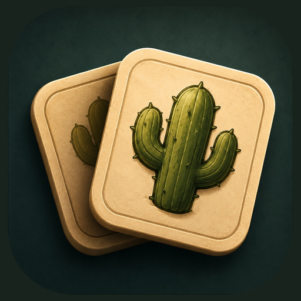

Sobre o jogo
Cactus Match é um jogo de memória leve, divertido e cheio de personalidade. Encontre os pares e descubra diferentes cactos enquanto joga no seu ritmo.
- Modo Normal para relaxar e buscar o melhor desempenho.
- Modo Sobrevivência para testar seus limites.
- Progressão, personalização e save na nuvem entre aparelhos.
- Disponível em 7 idiomas.